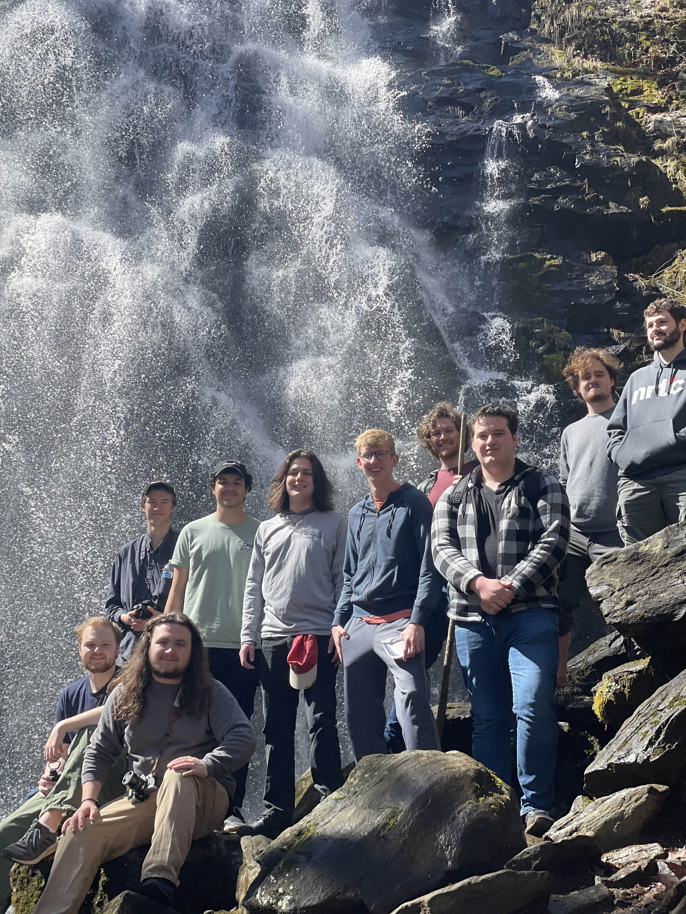
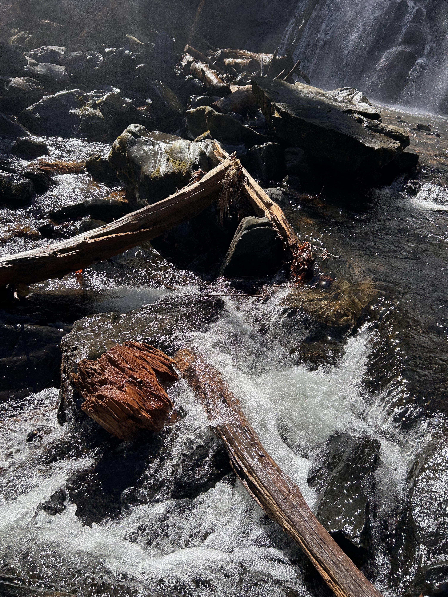
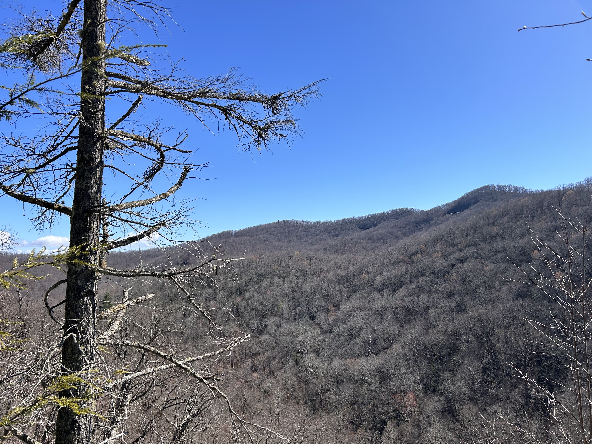
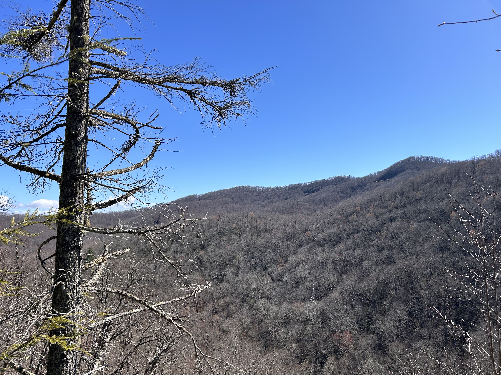

Home
Ever since I was a kid I had always loved the mountains. My family would vist almost yearly due to soccer tournaments taking us up there. While I loved playing soccer my favorite part of those trips was always hiking the different trails across the Blue Ridge Parkway. Once all of our games had concluded for the day, we would drive down Blue Ridge Parkway searching for different trails to hike.
Blue Ridge Mountains
This was the beginning of my love for hiking. While my family would slowly stop hiking, I would continue and eventually gather a group of friends to join me. While our college schdules have caused it to be much harder to plan trips together, we still make sure to take a trip once a year up to the Blue Ridge Mountains.
About
My name is Ben, I grew up in Cary, NC. Through out highschool, I made many friends who shared a love for hiking and photography. While we started small just walking short local trails, we would soon plan a trip up to the Blue Ridge Mountains for our spring break. This would become our yearly tradition. Following graduation multiple of us went off to different colleges while others started working. Despite the distance, we still meet up once a year for a trip to the mountains. Some years we just walk shorter trails and explore the different mountain towns, while other years we plan for specific day long trails.
Mountain Trailhead
Favorite Locations
 

Blue Ridge Mountains
The Blue Ridge is a mountain range that stretches 550 miles from Pennsylvania to Georgia. It was named such due to a bluish haze when viewing the mountains from a distance. These mountains are commonly referred to as one of the most beautiful parts of America, but the Blue Ridge Mountains are not only famous due to its breathtaking views. The Blue Ridge Parkway is the first national rural parkway built, and is over 450 miles long. This is where the mountains gain most of their notoriety. The parkway allows you to travel nearly the entire mountain range stoplight free, while enjoying the scenic views. Along the parkway are hundreds of trails, lookout points, and historical buildings. This is where we predominantly look for our trails. While we have done many of the big trails along the parkway, such as Grandfather mountain, we also like to do the random smaller trails that we find just by driving up or down the parkway.
Blue Ridge Parkway
Why Hike?
While beautiful views and exploring nature is why I enjoy hiking there are many reasons why you should hike. Hiking can have a massive positive impact on both your physical and mental health. Hiking
Gear
The first step to going on a hike is preparing. What you take with you is extremely important. Below is a table compiled of what I like to take on my hikes as well as a link to a quality brand of that item, while not all of it is required it certainly makes the hikes much more manageable.
| Gear | Link | Price |
|---|---|---|
| Hiking Boot | Amazon | $89.95 |
| Hiking Pants | Amazon | $45.98 |
| Water Bottle | Amazon | $19.00 |
| Trekking Pole | Amazon | $29.99 |
| Backpack | Amazon | $34.99 |
| Camera | Amazon | $399.99 |
Photo realistic man in hiking gear